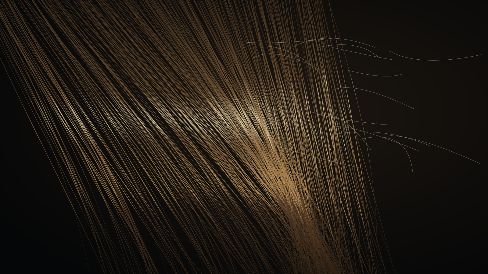

Vite Hair FX · Hair
Real strands, at a cost a game can afford.
Vite Hair FX is strand-based hair built on AMD TressFX, reworked for performance and given a new hair BRDF. Simulation, shading and shadowing run as one system, so hero characters get individual strands instead of cards.
Why strands
Cards are cheap and predictable. They never quite read as hair.
Card-based hair breaks down under motion and at grazing angles, which is exactly where a character is most often seen. Strand hair simulates and renders individual fibres and looks dramatically better — and traditionally costs dramatically more, split across simulation, transparency-heavy rendering and shadowing.
Vite Hair FX exists to close that cost gap, so strand hair fits a real frame budget for hero characters, with cards reserved for crowds and distance.
| Based on | AMD TressFX 5.0, integrated into the Unreal Engine Vite renderer |
|---|---|
| Modules | Runtime simulation and rendering, asset import, editor tooling |
| Simulation | Responds to head movement, wind and collision |
| Rendering | Order-independent transparency, self-shadowing and anisotropic hair highlights |
| Platforms | Desktop; excluded automatically from mobile and ES 3.1 shader platforms |
What Hair FX adds
Faster passes, better shading, safer integration.
Lower frame cost
Simulation and rendering passes reworked for performance, aimed at fitting strand hair for hero characters into a 60 FPS budget.
New hair BRDF
A hair-specific shading model for more natural primary and secondary highlights and light transmitted through strands.
Stable simulation
Strands follow fast character motion without lagging, and damping settles the solver instead of leaving hair jittering.
Debug views
Visualise simulation strands, guide influence, root UVs and strand dimensions to find authoring problems in seconds.
Compile-time gating
Hair FX compiles in only when the engine is built with VITE_TRESSFX, so builds for titles without strand hair carry none of its shaders.
Works with Vite's stack
Integrated with Vite's lighting and SSGI, with manual guidance on the anti-aliasing modes that suit thin geometry.
VITE_TRESSFX=1 and enable the plugin. The Hair FX performance work and new hair BRDF are in
development on top of it.